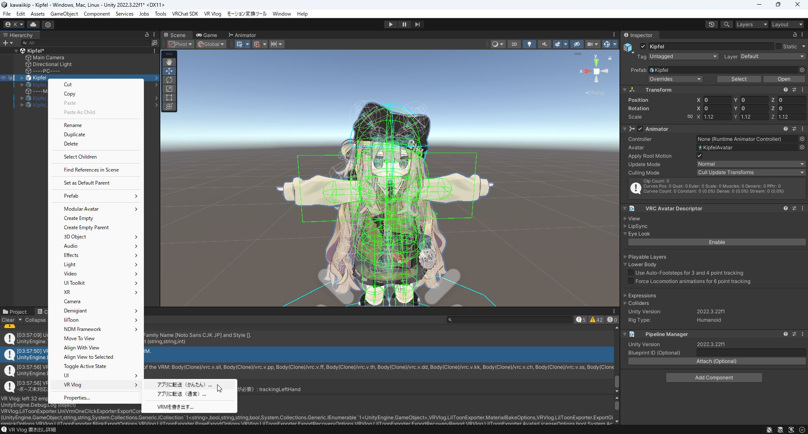
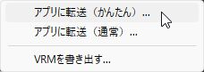
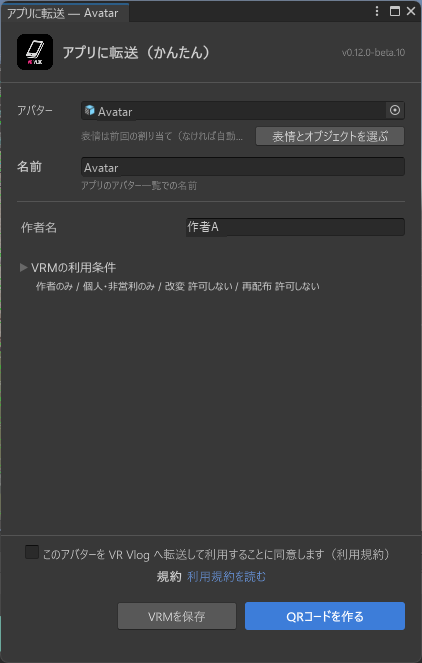
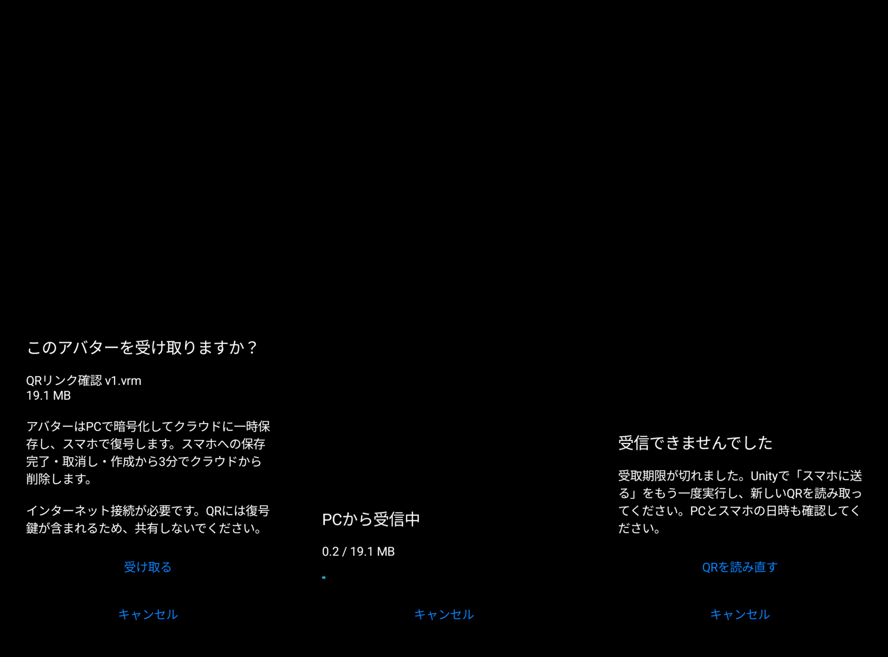

アバターをお持ちの方へ
アバターをVR Vlogへ送る
ALCOM / VCCでエクスポーターを入れ、Unityからスマホへ転送します。
普段使っている管理アプリの手順に沿って進めてください。
準備するもの
- アバターとlilToonを導入済みのUnity 2022.3プロジェクト
- ALCOMまたはVCC
- VR Vlogをインストールしたスマホとインターネット接続
始める前に Unityで作業を保存し、プロジェクトをバックアップしてからUnityを閉じます。
アバターの購入・Unityの初期設定はこちら ↗配布元を登録する
公式サイトの導入欄を開き、普段使っている管理アプリを選びます。
ALCOM
「ALCOM」を選び、
「ALCOMに追加」を押します。
VCC
「VCC」を選び、
「VCCに追加」を押します。
- ブラウザーに確認が出たら、管理アプリの名前を確認して「開く」を押します。
- 管理アプリで配布元の名前と公式URLを確認し、登録します。
「すでに登録されています」と表示された場合は、そのまま次へ進みます。
プロジェクトに導入する
アバターが入っているプロジェクトで、VR Vlog lilToon VRM Exporterを探します。見つからないときは「VR Vlog」で検索してください。
ALCOM
- 対象プロジェクトの「管理」を開きます。
- パッケージの「インストール済み」欄から最新の正式版を選びます。
- 変更内容を確認して「適用」を押します。
- 完了後、「Unityを開く」を押します。
VCC
- 対象プロジェクトの「Manage Project」を開きます。
- 「Installed Version」の「Not Installed」から最新の正式版を選びます。
- 自動で始まるインストールが終わるまで待ちます。
- 「Open Project」を押します。
確認すること：インストール済みの欄に、選んだバージョンが表示されていれば完了です。
Unityから転送する
ここからはALCOM・VCC共通です。Unityの読み込みが終わってから進めます。
アバター本体を選ぶ
Hierarchyで、使いたいアバターの一番上の行を右クリックします。髪や衣装などの子オブジェクトを選ばないようにしてください。


名前と利用条件を確認する
- アバター
- 対象とプレビューが合っているか確認します。
- 名前
- アプリで表示する名前を入力します。
- 作者名
- アバターの作者名を入力します。
- VRMの利用条件
- 元のアバター・衣装の規約に合わせて設定します。
下の同意欄を確認してチェックし、「QRコードを作る」を押します。準備ができたら「QRを表示」を押します。
画面の設定値をそのままコピーせず、使用するアバターの規約を確認してください。

スマホで受け取る
- スマホのカメラで、自分のPCに表示されたQRコードを読み取ります。
- 表示されたリンクからVR Vlogを開きます。
- ファイルを確認して「受け取る」を押し、受信が終わるまで待ちます。
- アバターを選んで、表示を確認します。
QRコードは他の人に共有しないでください。

困ったときは
追加ボタンで開けない・別の管理アプリが開く
この場合だけ、公式の配布元URLを手動で登録します。
https://vrvlog.fun/exporter/index.jsonALCOM
「パッケージ＆テンプレート」→「VPMリポジトリ」→「VPMリポジトリを追加」
VCC
「Settings」→「Packages」→「Add Repository」
URLを貼り付けて配布元を登録したら、02 プロジェクトに導入へ戻ります。
「QRコードを作る」が押せない
転送画面の案内を確認し、名前・作者名を入力して、同意が必要な項目にチェックを入れてください。
表情を詳しく設定したい
Unityの「VR Vlog」から「アプリに転送（通常）」を開いて設定します。
解決しない場合は、作者のX ↗へお問い合わせください。